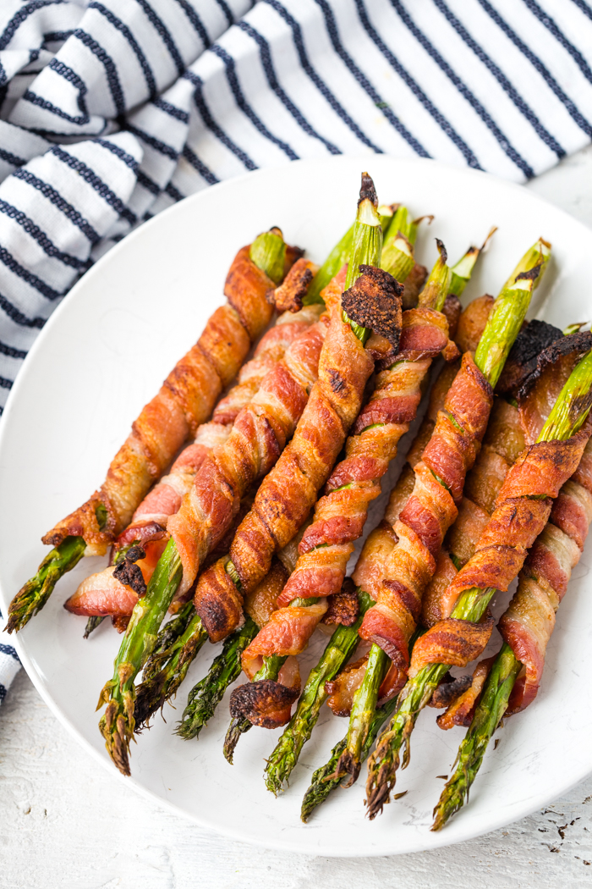

Bacon-Wrapped Asparagus

Description
This bacon-wrapped asparagus is a great side the features many wonderful flavors. It is a great side dish for just about any meal. It is a single asparagus wrapped in bacon, coated with butter, garlic, and many flavorful seasonings.
Ingredients
- ¼ cup olive oil
- 5 cloves garlic, minced
- 1 tablespoon chopped fresh parsley
- 1 pound asparagus, ends trimmed
- ½ pound bacon
- toothpicks
- salt and ground black pepper to taste
Steps
- Preheat the oven to 400 degrees F (200 degrees C). Line a rimmed baking sheet with aluminum foil.
- Combine olive oil, garlic, and parsley in a saute pan. Saute over medium heat for 3 minutes.
- Lay 4 asparagus spears in the center of each bacon slice. Drizzle garlic oil on top. Wrap bacon around asparagus and secure with a toothpick. Transfer asparagus bundles to the baking sheet and sprinkle with salt and pepper.
- Bake in the preheated oven until bacon is crisp, 20 to 25 minutes.